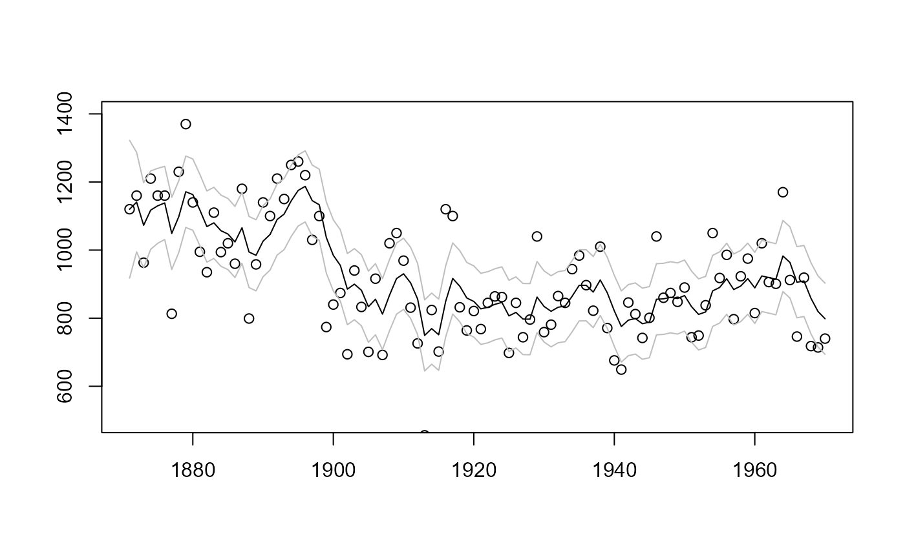
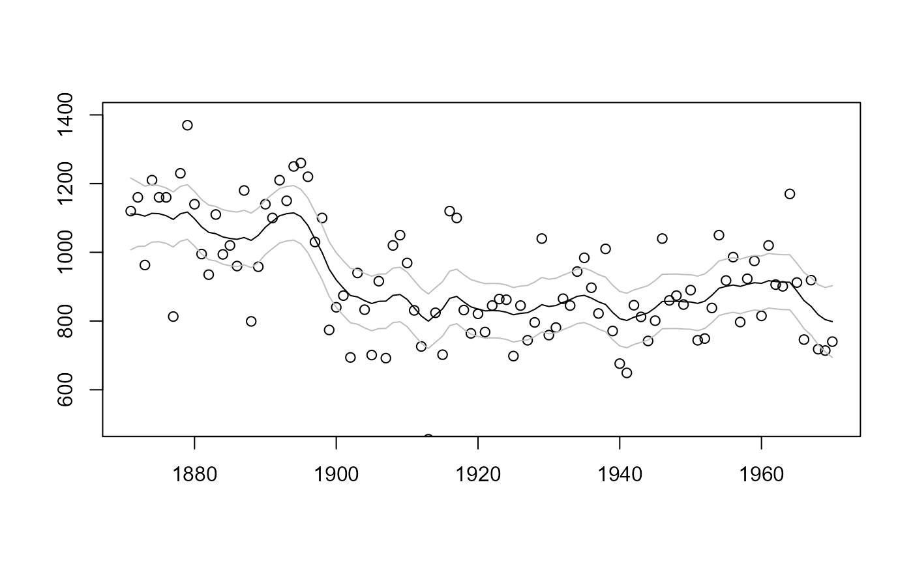

Fits a State Space model as specified by the user.
statespacer(
y,
H_format = NULL,
local_level_ind = FALSE,
slope_ind = FALSE,
BSM_vec = NULL,
cycle_ind = FALSE,
addvar_list = NULL,
level_addvar_list = NULL,
arima_list = NULL,
sarima_list = NULL,
self_spec_list = NULL,
exclude_level = NULL,
exclude_slope = NULL,
exclude_BSM_list = lapply(BSM_vec, function(x) 0),
exclude_cycle_list = list(0),
exclude_arima_list = lapply(arima_list, function(x) 0),
exclude_sarima_list = lapply(sarima_list, function(x) 0),
damping_factor_ind = rep(TRUE, length(exclude_cycle_list)),
format_level = NULL,
format_slope = NULL,
format_BSM_list = lapply(BSM_vec, function(x) NULL),
format_cycle_list = lapply(exclude_cycle_list, function(x) NULL),
format_addvar = NULL,
format_level_addvar = NULL,
fit = TRUE,
initial = 0,
method = "BFGS",
control = list(),
collapse = FALSE,
diagnostics = TRUE,
standard_errors = NULL,
verbose = FALSE
)N x p matrix containing the N observations of the p dependent variables.
Format of the H system matrix, the variance - covariance matrix of the observation equation.
Boolean indicating whether a local level should be added to the state space model.
Boolean indicating whether a local level + slope should be added to the state space model.
Vector containing the BSM seasonalities that have to be added to the state space model.
Boolean indicating whether a cycle has to be added to the state space model.
A list containing the explanatory variables for each of
the dependent variables. The list should contain p (number of dependent
variables) elements. Each element of the list should be a N x k_p matrix,
with k_p being the number of explanatory variables for the pth
dependent variable. If no explanatory variables should be added for one
of the dependent variables, then set the corresponding element to NULL.
A list containing the explanatory variables for
each of the dependent variables. The list should contain p (number of
dependent variables) elements. Each element of the list should be a
N x k_p matrix, with k_p being the number of explanatory variables
for the pth dependent variable. If no explanatory variables should be
added for one of the dependent variables, then set the corresponding
element to NULL.
Specifications of the ARIMA components, should be a list
containing vectors of length 3 with the following format: c(AR, I, MA).
Should be a list to allow different ARIMA models for different sets of
dependent variables. Note: The AR and MA coefficients are
constrained such that the AR component is stationary, and the MA
component is invertible.
See Ansley and Kohn (1986)
for details about
the transformation used.
Specifications of the SARIMA components, should be a list containing lists that contain 4 named vectors. Vectors should be named: "s", "ar", "i", "ma". Should be a list of lists to allow different SARIMA models for different sets of dependent variables. Note: The AR and MA coefficients are constrained such that the AR components are stationary, and the MA components are invertible. See Ansley and Kohn (1986) for details about the transformation used. Note: For multivariate models, the order of "s" matters, as matrix multiplication is not commutative!
A list containing the specification of the self specified component. See the Details section for extensive details about the format that must be followed for this argument.
Vector containing the dependent variables that should not get a local level.
Vector containing the dependent variables that should not get a slope.
List of vectors, each vector containing the dependent variables that should not get the corresponding BSM component.
The dependent variables that should not get the corresponding cycle component. Should be a list of vectors to allow different dependent variables to be excluded for different cycles.
The dependent variables that should not be involved in the corresponding ARIMA component. Should be a list of vectors to allow different dependent variables to be excluded for different ARIMA components.
The dependent variables that should not be involved in the corresponding SARIMA component. Should be a list of vectors to allow different dependent variables to be excluded for different SARIMA components.
Boolean indicating whether a damping factor should be included. Must be a vector if multiple cycles are included, to indicate which cycles should include a damping factor.
Format of the Q_level system matrix the variance - covariance matrix of the level state equation.
Format of the Q_slope system matrix, the variance - covariance matrix of the slope state equation.
Format of the Q_BSM system matrix, the variance - covariance matrix of the BSM state equation. Should be a list to allow different formats for different seasonality periods.
Format of the Q_cycle system matrix, the variance - covariance matrix of the cycle state equation. Should be a list to allow different formats for different cycles.
Format of the Q_addvar system matrix, the variance - covariance matrix of the explanatory variables state equation.
Format of the Q_level_addvar system matrix, the variance - covariance matrix of the explanatory variables of the level state equation.
Boolean indicating whether the model should be fit by an
iterative optimisation procedure. If FALSE, the model is only evaluated
at the initial values.
Vector of initial values for the parameter search. The initial values are recycled or truncated if too few or too many values have been specified.
Method that should be used by the optim
or optimr function to estimate the parameters. Only
used if fit = TRUE.
A list of control parameters for the
optim or optimr function. Only
used if fit = TRUE.
Boolean indicating whether the observation vector should be
collapsed. Should only be set to TRUE if the dimensionality of the
observation vector exceeds the dimensionality of the state vector.
If this is the case, computational gains can be achieved by collapsing
the observation vector.
Boolean indicating whether diagnostical tests should be
computed. Defaults to TRUE.
Boolean indicating whether standard errors should be
computed. numDeriv must be installed in order to compute the
standard errors! Defaults to TRUE if numDeriv is available.
Boolean indicating whether the progress of the optimisation
procedure should be printed. Only used if fit = TRUE.
A statespacer object containing:
function_call: A list containing the input to the function.
system_matrices: A list containing the system matrices of
the State Space model.
predicted: A list containing the predicted components of
the State Space model.
filtered: A list containing the filtered components of
the State Space model.
smoothed: A list containing the smoothed components of
the State Space model.
diagnostics: A list containing items useful for diagnostical tests.
optim (if fit = TRUE): A list containing the variables that are returned
by the optim or optimr function.
loglik_fun: Function that returns the loglikelihood of the
specified State Space model, as a function of its parameters.
standard_errors (if standard_errors = TRUE): A list containing the
standard errors of the parameters of the State Space model.
For extensive details about the object returned,
see vignette("dictionary", "statespacer").
To fit the specified State Space model, one occasionally has to pay careful
attention to the initial values supplied. See
vignette("dictionary", "statespacer") for details.
Initial values should not be too large, as some parameters use the
transformation exp(2x) to ensure non-negative values, they should also not
be too small as some variances might become relatively too close to 0,
relative to the magnitude of y.
If a component is specified without a format, then the format defaults to a
diagonal format.
self_spec_list provides a means to incorporate a self-specified component
into the State Space model. This argument can only contain any of the
following items, of which some are mandatory:
H_spec: Boolean indicating whether the H matrix is self-specified.
Should be TRUE, if you want to specify the H matrix yourself.
state_num (mandatory): The number of state parameters introduced by the
self-specified component. Must be 0 if only H is self-specified.
param_num: The number of parameters needed by the self-specified
component. Must be specified and greater than 0 if parameters are needed.
sys_mat_fun: A function returning a list of system matrices that are
constructed using the parameters. Must have param as an argument. The
items in the list returned should have any of the following names: Z,
Tmat, R, Q, a1, P_star, H. Note: Only the system matrices that depend on
the parameters should be returned by the function!
sys_mat_input: A list containing additional arguments to sys_mat_fun.
Z: The Z system matrix if it does not depend on the parameters.
Tmat: The T system matrix if it does not depend on the parameters.
R: The R system matrix if it does not depend on the parameters.
Q: The Q system matrix if it does not depend on the parameters.
a1: The initial guess of the state vector. Must be a matrix
with one column.
P_inf: The initial diffuse part of the variance - covariance
matrix of the initial state vector. Must be a matrix.
P_star: The initial non-diffuse part of the variance - covariance
matrix of the initial state vector if it does not depend on the
parameters. Must be a matrix.
H: The H system matrix if it does not depend on the parameters.
transform_fun: Function that returns transformed parameters for which
standard errors have to be computed. Must have param as an argument.
transform_input: A list containing additional arguments to
transform_fun.
state_only: The indices of the self specified state that do not play a
role in the observation equations, but only in the state equations. Should
only be used if you want to use collapse = TRUE and have some state
parameters that do not play a role in the observation equations. Does not
have to be specified for collapse = FALSE.
Note: System matrices should only be specified once and need to be
specified once! That is, system matrices that are returned by sys_mat_fun
should not be specified directly, and vice versa. So, system matrices need
to be either specified directly, or be returned by sys_mat_fun. An
exception holds for the case where you only want to specify H
yourself. This will not be checked, so be aware of erroneous output if you
do not follow the guidelines of specifying self_spec_list. If time-varying
system matrices are required, return an array for the time-varying system
matrix instead of a matrix.
Durbin J, Koopman SJ (2012). Time series analysis by state space methods. Oxford university press.
Ansley CF, Kohn R (1986). “A note on reparameterizing a vector autoregressive moving average model to enforce stationarity.” Journal of Statistical Computation and Simulation, 24(2), 99--106.
# Fits a local level model for the Nile data
library(datasets)
y <- matrix(Nile)
fit <- statespacer(initial = 10, y = y, local_level_ind = TRUE)
# Plots the filtered estimates
plot(
1871:1970, fit$function_call$y,
type = "p", ylim = c(500, 1400),
xlab = NA, ylab = NA
)
lines(1871:1970, fit$filtered$level, type = "l")
lines(
1871:1970, fit$filtered$level +
1.644854 * sqrt(fit$filtered$P[1, 1, ]),
type = "l", col = "gray"
)
lines(
1871:1970, fit$filtered$level -
1.644854 * sqrt(fit$filtered$P[1, 1, ]),
type = "l", col = "gray"
)

# Plots the smoothed estimates
plot(
1871:1970, fit$function_call$y,
type = "p", ylim = c(500, 1400),
xlab = NA, ylab = NA
)
lines(1871:1970, fit$smoothed$level, type = "l")
lines(
1871:1970, fit$smoothed$level +
1.644854 * sqrt(fit$smoothed$V[1, 1, ]),
type = "l", col = "gray"
)
lines(
1871:1970, fit$smoothed$level -
1.644854 * sqrt(fit$smoothed$V[1, 1, ]),
type = "l", col = "gray"
)
